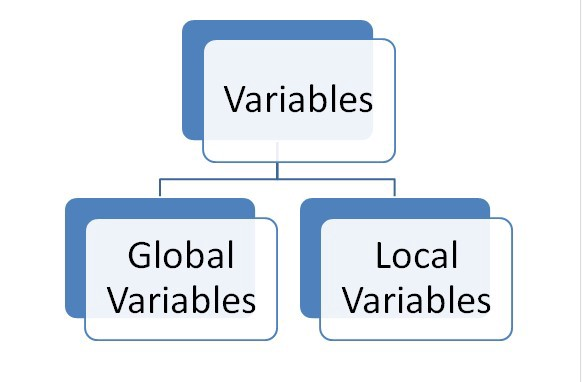

Four Questions in javascript
Local Storage:
setItem() Method – This method takes two parameters one is key and another one is value. It is used to store the value in a particular location with the name of the key.localStorage.setItem(key, value)
getItem() Method – This method takes one parameter that is key which is used to get the value stored with a particular key name.localStorage.getItem(key)
removeItem() Method – This is method is used to remove the value stored in the memory in reference to key.localStorage.removeItem(key)
clear() Method – This is method is used to remove the value stored in the memory in reference to key.localStorage.clear()
Session Storage
setItem() Method – This method takes two parameters one is key and another one is value. It is used to store the value in a particular location with the name of the key.sessionStorage.setItem(key, value)
getIteam() Method – This method takes one parameter that is key which is used to get the value stored with a particular key name.sessionStorage.getItem(key)
removeItem() Method – This is method is used to remove the value stored in the memory in reference to key.sessionStorage.removeItem(key)
clear() Method – This method is used to clear all the values stored in the session storagesessionStorage.clear()
The scope of a variable defines where it’s accessible in a program based off of where it was created. Just because we create a variable in one place in our program doesn’t mean it’s going to be accessible from anywhere in our script. In this article, we will discuss the two types of variable scope — local and global, and their differences.
Global scope — Global scope contains all of the things defined outside of all code blocks. A code block simply consists of grouped statements inside curly braces ({ }). if statement, loops, function are examples of structure that create a code block. A global variable has global scope. A global variable is accessible from anywhere in the code.
Local Scope — Local scope contains things defined inside code blocks. A local variable has local scope. A local variable is only accessible where it’s declared.
Undefined is also a primitive value in JavaScript. A variable or an object has an undefined value when no value is assigned before using it. So you can say that undefined means lack of value or unknown value.
Example1: undefinedvar myVar;
alert(myVar); // undefined
Example2: undefinedfunction Sum(val1, val2)
{
var result = val1 + val2;
}
var result = Sum(5, 5);
alert(result);// undefined
JavaScript has a runtime model based on an event loop, which is responsible for executing the code, collecting and processing events, and executing queued sub-tasks. This model is quite different from models in other languages like C and Java.